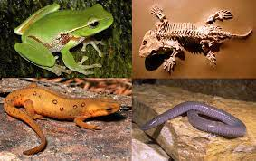
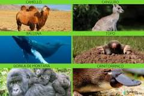
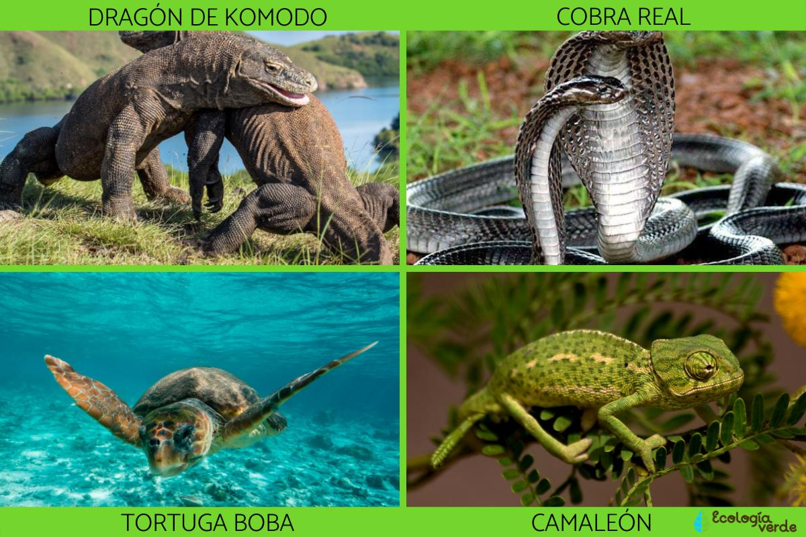

<!DOCTYPE html>
<html lang="en">
<head>
    <meta charset="UTF-8">
    <meta name="viewport" content="width=device-width, initial-scale=1.0">
    <title>Practica 3</title>
</head>
<body>
    
</body>
</html>

<body background="photo-1464618663641-bbdd760ae84a.jpeg"> 
    <font face="Century Gothic" size="5" color="write">
        <H1>REINO ANIMAL</H1>
    </font>
</body>
<table width="80%" style="Color: white;">
    <tr >
        <td >PECES</td>
        <td >
            <ul>
                <li>Bacalao de profundidad</li>
                <li>Merluza de tres aletas</li>
                <li>Congrio negro</li>
                <li>Salmón del atlántico.</li>
                <li>Raya volantín</li>
                <th></th>
            </ul>
        </td>
    </tr>
    <tr>
        <td>AMFIBIOS</td>
        <td>  
                 <ol>
                <li>Ranita de Cristal Norteña</li>
                <li>Sapo de la Meseta</li>
                <li>Sapito Mexicano</li>
                <li>Salamandra</li>
                <li>Triton</li>
                <th></th>
            </ol>
        </td>
    </tr>
    <tr>
        <tr>
            <td>MANIFEROS</td>
            <td>  
                     <ol>
                    <li>Elefantes</li>
                    <li>Jirafas</li>
                    <li>Camello</li>
                    <li>Osos</li>
                    <li>Perros</li>
                    <th></th>
                </ol>
            </td>
        </tr>
         <tr>
            <tr>
                <tr>
                    <td>REPTILES</td>
                    <td>  
                             <ol>
                            <li>Dragón de Komodo</li>
                            <li>Aligátor de China</li>
                            <li>Caimán de Cuvier</li>
                            <li>Anaconda común</li>
                            <li>Iguana rinoceronte</li>
                            <th></th>
                        </ol>
                    </td>
                </tr>
                <tr>
